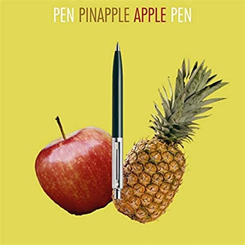

Pen pineapple apple pen

Description
You have a pen, you have an apple. Ah, Apple pen.
You have a pen, you have a pineapple. Ah, Pineapple pen.
Apple pen, Pineapple pen. Ah, Pen pineapple apple pen.
Ingredients
Steps
- Take the apple and clean the damn apple.
Who doesn't clean their apple before eating it.
Get serious.
- Get yourself a big pineapple and a knife, preferably
a sharp one, and start peeling the pineapple
(please do be carefull, I'm not trying to get sued)
- Once you're done with cleaning your apple and peeling
your pineapple, take a pen of your own preferance, and just
go ahead and stick the pen in the apple (or pineapple first, if
you're into that)
- Now you should have an apple on stick (on a pen actually
but you get the point), and what you want to do now is
just take the other side of your pen and get your other fruit
(depending on which one you used first) stuck on that
pen.
- If you've completed these quick but crucial steps
in the right order, you should have something what
kinda looks like a gym barbell made out of fruit. Is that
the case? Great! You've just made yourself a fresh
pen pineapple apple pen!